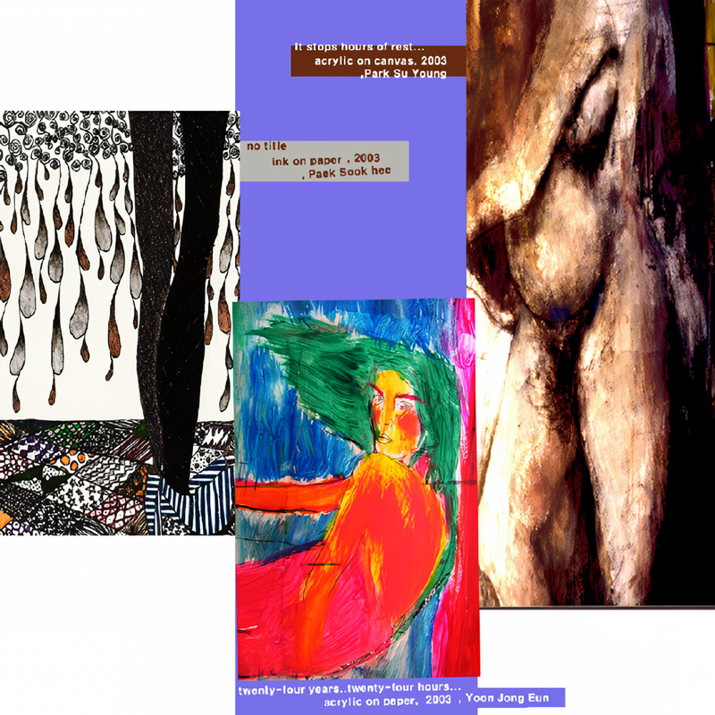

The Women's Realm_세 여자의 방
2003 스톤앤워터 전시지원공모선정 다섯번째 전시
2003_1004 ▶ 2003_1019

초대일시_2003_1004_토요일_05:00pm
참여작가_박수영_윤종은_백숙희
책임기획_박수영
작가와의 대화_평면인가 평면이 아닌가
2003_1019_일요일_04:00pm / 보충대리공간 스톤 앤 워터
박수영_윤종은_백숙희
보충대리공간 스톤 앤 워터
경기도 안양시 만안구 석수2동 286-15번지 2층
Tel. 031_472_2886
"세개의 방, 세명의 여자, 세가지 평면"
● 신진 여성작가 3명의 여성적 감수성이 물씬 풍기는 전시가 보충대리공간 스톤 앤 워터에서 열린다. 전시명은 (the women's realm- 세 여자의 방)이다. 이 전시는 2003 스톤 앤 워터 기획공모 선정 다선 번째 전시로 올해의 마지막 선정작 으로 작가 박수영이 기획하고 박수영, 윤종은, 백숙희 이 세 여성의 평면작업이 선보여진다. 20대 중후반의 젊은 작가인 이들은 다양한 매체의 등장으로 인해 현대에 들어서 다소 고루하고 진부한 양식으로 취급받는 평면회화 작업을 이들만의 감각적인 세계로 표현해낸다.
_waifu2x_photo_noise3_scale.png)
_waifu2x_photo_noise3_scale.png)
윤종은은 여성의 얼굴, 표정을 통해 삶에서 느껴지는 형상들을 표현해내며 박수영은 여성의 기억 속에서 남아있는 고통의 잔상에서 느껴지는 감정을 익명화된 신체로 이미지화해보고 백숙희는 여성의 기분을 추상적인 장식으로 반환시켜 표현해본다.
● 각기 다른 개념에서 출발한 이들의 작업은 여성의 내면과 외면을 여성의 신체를 통해 표현한다는 공통점을 가지고 있다. 세 여자의 방은 이 세 여성의 평면회화 작업을 「외면에서, 내면에서, 기분에서」라는 세 가지 테마로 공간 속에 담아내고 '여성성' 속에서 세 개의 방은 유기성을 가지게 된다.
_waifu2x_photo_noise3_scale.png)
_waifu2x_photo_noise3_scale.png)
작가들은 테마별로 자신의 개별 공간을 구축하면서 이 공간은 the women's realm 이라는 하나의 통합공간으로 구성되어진다. 관람객들은 각기 다른 세 방을 교류하면서 여성의 신체를 통해 표현된 '여성성'의 차이와 다양성 그리고 그 깊이를 느껴보게 된다.
● 이들의 평면회화 작업은 기존의 화면 속에 갇혀있기를 거부한다. 커튼형식의 열고 닫는 회화부터 접는 회화 등의 다양한 실험적 표현을 통해 대중과의 거리감 줄이기를 시도하며 평면회화의 다양한 가능성을 열어보일것이다.
_waifu2x_photo_noise3_scale.png)
_waifu2x_photo_noise3_scale.png)
_waifu2x_photo_noise3_scale.png)
women's realm은 세 명의 젊은 여성 작가가 만들어낸 공간이며, 城이며, 영토입니다. / women's realm은 하나의 통합공간이면서 세 개의 개별 공간으로 열려있습니다. / women's realm은 현대미술의 다양한 표현 양식 속에서 다소 진부해 보이는 평면회화양식을 전혀 새로운 그들만의 세계로 표현하고 구현해 냅니다. / women's realm의 평면은 깊고 넓습니다. 여성의 신체를 통해 표현된 '여성성'의 다양성과 깊이를 느껴보십시오. / women's realm은 당신의 침입 혹인 침범을 허락합니다.
■ 박수영